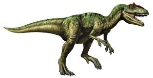
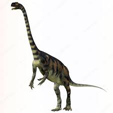

¿Qué fueron los Dinosaurios?
La palabra Dinosaurio significa "lagartos terribles". Estos amiguitos fueron un diverso grupo de reptiles que dominaron el mundo durante un largo período de años, este periodo de tiempo fue llamado ERA MESOZOICA.
Su reinado se sostuvo por aproximadamente 160 millones de años, dejando una marca imborrable en la historia de la vida.
¿Cuál es el origen de los Dinosaurios?
La aparición de los Dinosaurios en el planeta Tierra se remonta hace unos 230 millones de años (a.C), hacia el llamado período Triásico.
El mundo en ese momento era muy distinto a lo que conocemos hoy en día. Era un solo continente llamado PANGEA, una gigantesca masa terrestre. Esto dificultaba diferenciar cualquier especie de fauna y flora que habitaba el mundo.
Ellos habitaban en un clima relativamente cálido y seco, debido a que gran parte de PANGEA eran zonas desérticas.
Este clima favoreció a este tipo de reptiles permitiéndoles la evolución de las primeras especies. Los reptiles se reproducen en climas cálidos debido a la porosidad de sus pieles, por lo tanto lograron poblar el mundo gracias a los desiertos del continente.
La gran cantidad de Dinosaurios se dieron a conocer cercano al final del Período Triásico. En ese momento el gran continente se dividiría en partes debido a una serie de terremotos y volcanes que erupcionaron. Entre los que destacaban se encuentran los Terópodos y los Prosaurópodos.

Terópodos

Prosaurópodos